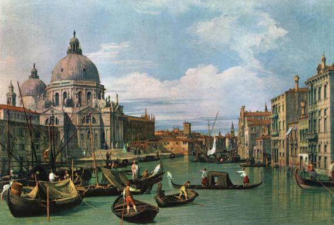

History of Venice
Venice is a western Italian city located in the region Veneto. The name of this city came from Veneti people. City is consisting of 118 islands which are connected to canals and bridges. Houses in Venice were not built on the islands, they were built on wooden platforms and supported with wood. After the fall of Western Roman empire barbarians settled down in Rome territories. Population of Venice has decided to escape to swamps, where they have found safety in islands: Torcello, Lesolo and Malamocco. Even though Venetians inhabited islands for some time, they used wooden platforms. To local people in Venice flooding of the city was a normal everyday phenomenom. Gondola riders are known as the people who have as hard of a job as Venetian glass artists, which they learn and practice many years to become Gondola riders.
